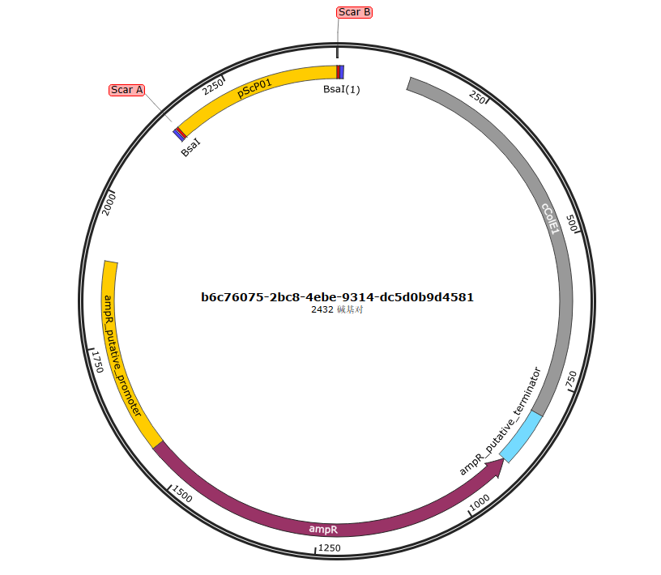
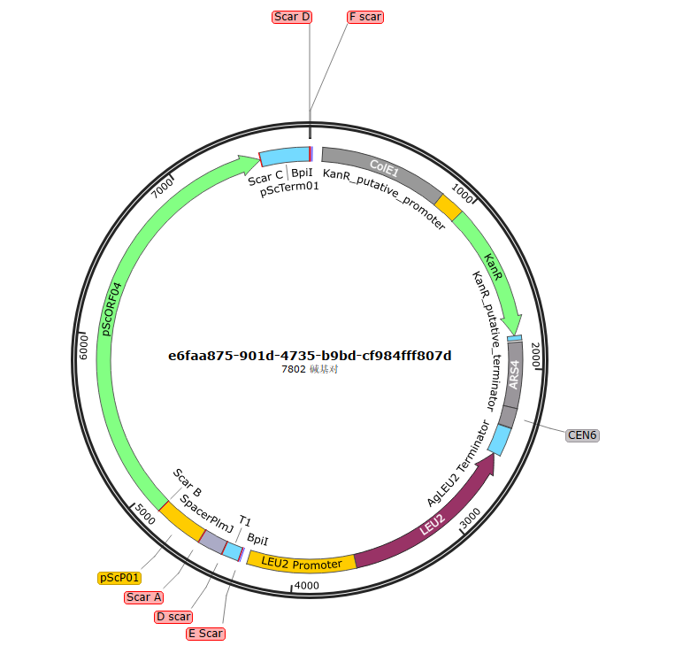
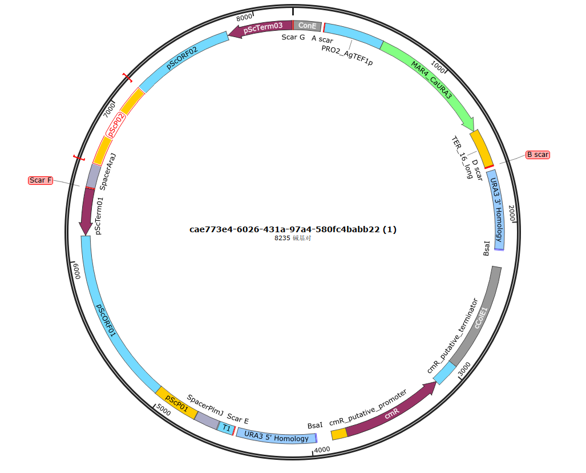

????¶
??????????¶
🧬 3 级组装快速上手指南
Level 1 ????¶
✅ Level 1 基础组装（单元件基础构建）
- 选择目标物种：在 category 中选定 E. coli 或 S. cerevisiae；
- 选择元件与载体：匹配对应 Level 1 元件与 Backbone；
- 点击开始组装 → 等待完成 → 下载结果文件；
- 出现 Assembly completed 提示，即可获取组装图谱与序列文件。
Level 1 ????¶
Level 1 组装结果图谱示例：

Level 2 ?????¶
✅ Level 2 多元件组装（功能模块构建）
流程与 Level 1 一致，可同时选择多个功能元件+对应 Level 2 载体，一次性完成多片段组装设计，快速搭建表达模块。
Level 2 ????¶
Level 2 组装结果图谱示例：

Level 3 ????¶
✅ Level 3 高阶组装（复杂通路整合）
- 从历史记录中选择 ≥2 个已完成的 Level 2 质粒；
- 选择 Level 3 载体骨架；
- 一键组装 → 下载高阶组装结果；
- 轻松实现多模块整合，适配复杂代谢通路、基因线路等高级项目设计。
Level 3 ????¶
Level 3组装结果图谱示例：
